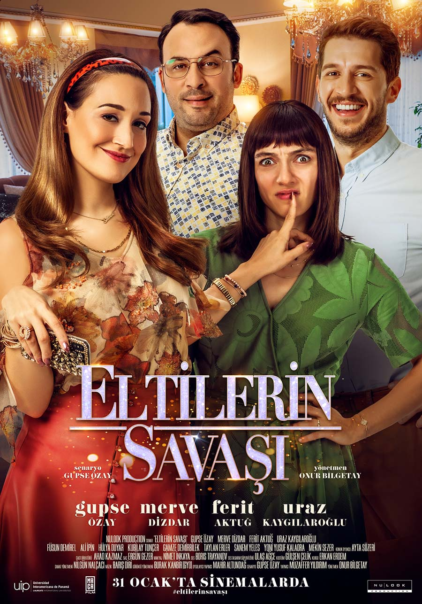

THE DOMESTIC COMEDY MOVIES THAT I RECOMMEND TO YOU
Aile Arasında(2017)
Fikret and music hall vocalist Solmaz, whose 21-year relationship ended on the same day, meet by a funny coincidence. When Solmaz's daughter Zeynep decides to marry her Adana lover, Fikret, who is afraid of everything, suddenly finds himself playing the role of her life. The wedding, which is planned to be between the family, grows Decisively at the insistence of the groom's family. Will this team be able to get along with the armed, traditional, kebab chain owner Adana family during the wedding preparations and will this wedding be held without anything going wrong?
Stars: Demet Evgar / Solmaz --- Engin Günaydın / Fiko --- Su Kutlu / Zeynep Balcılar --- Gülse Birsel / Mihriban --- Devrim Yakut / Mükerrem Kurt
IMDB Rating: 7.7/10

Eltilerin Savaşı(2020)
The War of the Eltis focuses on the sweet Decadence and endless rivalry between the two eltis, the Sultan and Gizem After a while, the small quarrels between the two Dec replaced by a sweet rivalry. The eltis, who are not lagging behind what each other has done, find themselves in a fun battle. Selim and Fatih, who are brothers, also get caught up in Dec wind of this rivalry between their spouses after a while. Focusing on the married lives of Gizem and Sultan, who are known for their fondness for social media, the film also reveals how the two elites influenced Selim and Fatih when they were in a race.
Stars: Gupse Özayv/ Sultan --- Merve Dizdar / Gizem --- Uraz Kaygılaroğlu / Fatih --- Ferit Aktuğ / Selim
IMDB Rating: 5.8/10
Görümce(2016)
Yeliz is very fond of his brother Ahmet. Bad surprise awaits Yeliz, because Ahmed fell in love with a girl. Things develop quickly, and Amet proposes to the girl. Hearing this, Yeliz's world collapses. Yeliz's hope is that Ahmet will leave this girl the same way he has separated his girlfriends so far. he starts making plans to separate his brother and the girl he loves. Trapped between his jealous older sister Yeliz and the girl he loves, Deniz, the only thing Ahmet can do is try to protect everything. During this struggle, Yeliz, Deniz and Ahmet are waiting for all kinds of funny adventures..
Stars: Gupse Özay / Yeliz --- Buğra Gülsoy / Ahmet --- Eda Ece / Deniz --- Dilşah Demir / Neboi